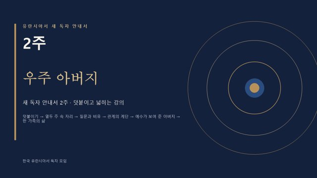
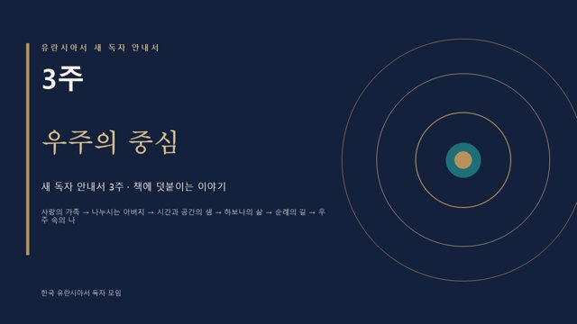
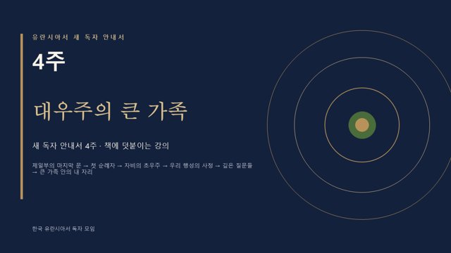
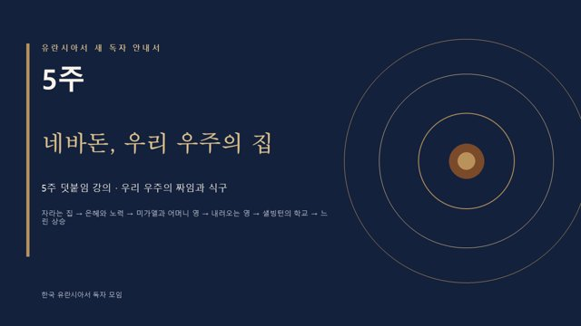
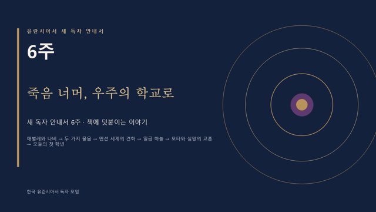
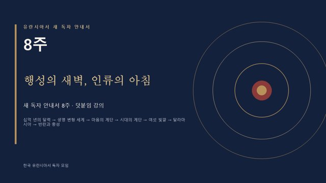
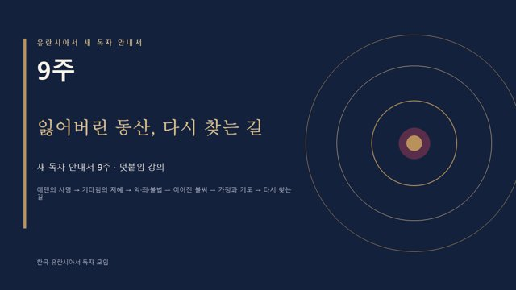
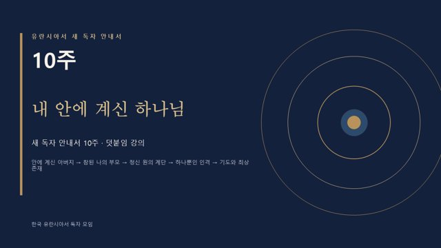
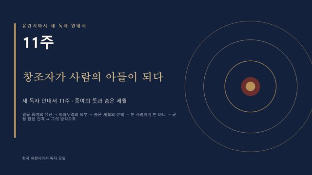
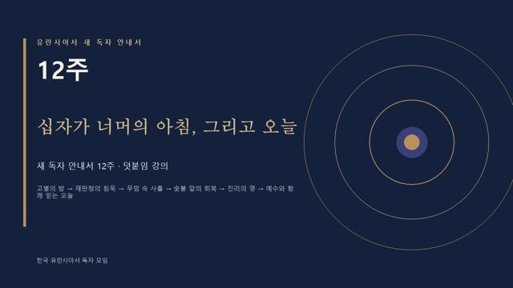

카드를 누르면 그 주의 오디오북이 열립니다. 화면을 한 번 누르면 낭독이 시작되고, 슬라이드가 저절로 넘어갑니다. (◀ ▶ 버튼이나 키보드 화살표로 앞뒤 이동)
1주▶
새로운 세계로의 초대
머리말 · 1편 · 92편 · 101편과 그 주제가 이어지는 편들
슬라이드 12장약 17분

2주▶우주 아버지
1~5편 · 우주 아버지와 그의 자녀들
슬라이드 12장약 17분

3주▶우주의 중심
6~15편 · 삼위일체, 파라다이스, 하보나, 일곱 초우주
슬라이드 12장약 18분

4주▶대우주의 큰 가족
15편 10장 · 16편 · 18편 3장 · 20~21편 · 24·26편 · 30편 4장 · 31편
슬라이드 12장약 17분

5주▶네바돈, 우리 우주의 집
32~42편 · 지역 우주 네바돈과 그 식구들
슬라이드 12장약 17분

6주▶죽음 너머, 우주의 학교로
47~48편 · 112편 — 모론시아의 삶을 덧붙여 읽기
슬라이드 12장약 17분
7주▶
행성의 시대와 루시퍼 반란
49~55편 덧붙임 · 50·52·53·54·55편의 숨은 이야기
슬라이드 12장약 17분

8주▶행성의 새벽, 인류의 아침
57~68편 · 행성의 탄생에서 달라마시아의 반란까지 (51·52·54편과 함께)
슬라이드 12장약 18분

9주▶잃어버린 동산, 다시 찾는 길
73~76편 · 83~84편 · 85~92편 중 · 93편
슬라이드 12장약 18분

10주▶내 안에 계신 하나님
99~103편 · 107~112편 · 115~117편 (더하여 5편 · 144편)
슬라이드 12장약 18분

11주▶창조자가 사람의 아들이 되다
119~120편 · 128편 · 133~134편, 그리고 100편의 예수 인격
슬라이드 12장약 17분

12주▶십자가 너머의 아침, 그리고 오늘
172편 3장 · 179~182편 · 186~194편 · 196편 (덧붙임: 181·186·189·192·195편)
슬라이드 12장약 18분